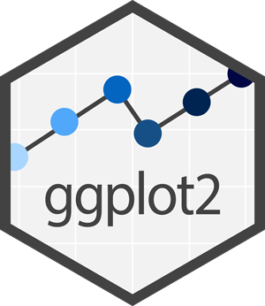

MTH_190
Resources
T & T
R
Syllabus
Class Days
6 fixes to common issues
Other Books:
ModernDive
Data Science in a box
Cheatsheets:
Data Visualization:
ggplot2
Data transformation: dplyr
Data Import: tidyr
RMarkdown Cheat sheet
Style Guide
Resources
6 fixes to common issues
Other Books:
ModernDive
Data Science in a box
Cheatsheets:
Data Visualization:
ggplot2

Data transformation: dplyr
Data Import: tidyr
RMarkdown Cheat sheet
Style Guide
The Tidyverse Style Guide